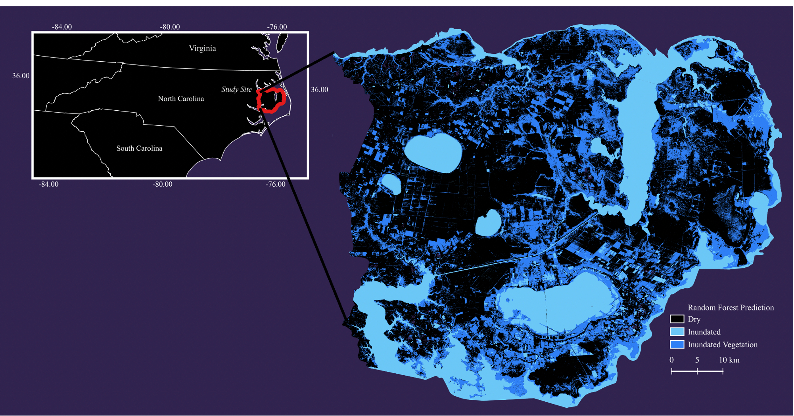

Capturing Inundation in Carolina's Coastal Plain
For my dissertation research I am focusing on creating a method to map variable inundation in the coastal plain region of North Carolina. To address this, I am working on developing a method to integrate multi-sensor remotely sensed data in a machine learning model with a physically based hydrologic model to map daily inundation.
My initial results were presented at the AGU Fall 2022 Meeting! Check out the poster here:
I am currently working hard to refine this method and get it published - please check back later for updates!